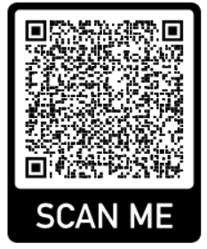

Martin Paulo
Software Developer
Contact:
My name is Martin Paulo. I have an inquisitive nature, always seeking to learn new technologies and to solve complex problems with innovative solutions, whilst maintaining a collaborative spirit that enhances team productivity. Software development, after all, is a human endeavor!
- Inquisitive Mindset: I have a natural curiosity that drives me to explore new technologies and to understand how things work.
- Eager to Learn: I'm always seeking opportunities to expand my knowledge and skills, whether through formal education or self-directed learning.
- Problem-Solving Enthusiast: I enjoy tackling complex problems and finding creative solutions to them.
- Innovative Thinking: I'm constantly looking for ways to improve my processes and to develop new solutions.
- Open to Feedback: I welcome constructive criticism and try use it as a tool for growth and improvement.
- Passionate about Technology: I have a genuine interest in the latest trends and advancements in software development.
- Collaborative Spirit: I believe in sharing knowledge and collaborating with others to achieve common goals.